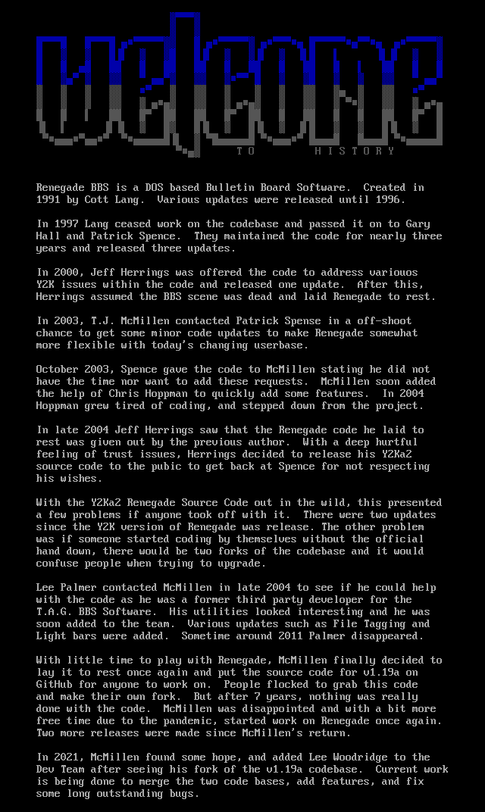

Home
Releases & Utils
Current Releases
v1.33/DOS Full Install
v1.33/DOS Upgrade
RECORDS.PAS
v1.00 & Up (Upgrades)
v1.30/DOS
v1.25/DOS
v1.22/DOS
v1.20a/DOS
v1.19a/DOS
v1.18a/DOS
v1.10/DOS
v1.00/DOS
Pre v1.00 (Upgrades)
Renegade v09-30.6/DOS
Renegade v06-30.6/DOS
Renegade v05-19.4/DOS
Renegade v01-10.4/DOS
Renegade v11-26.3/DOS
Renegade Utilities
Renegade Bot Blocker
Renegade User Packer
RG2FD
Links
Door Games
*FREE* & Keymakers
Cheepware
DoorMUD
Jibben Software
John Dailey Software
Land Of Devastation
M&S Software
N-E-Ware Doors
Operation Overkill
Phenom Productions
Sunrise Doors
Tradewars 2002
Usurper
FOSSIL & Telnet
NetFoss
NetSerial
R&M Software
FTN Mailers
BinkD
D'Bridge
FrontDoor
Miscellaneous
BBS Archves
cd.textfiles.com
MakeNL
Shareware CD Collection
Telnet BBS Guide
Telnet Clients
mTelnet
NetRunner
SyncTERM
Info
Renegade BBS
Renegade BBS Development
Renegade BBS History
Renegade BBS Manual
Renegade BBS Whatdone Since 2003
MetroNet
MetroNet Application Pack
MetroNet Echo Listings
MetroNet History
Contact
Telnet to The Titantic BBS

© 2003 - 2024 The Renegade BBS Development Team.